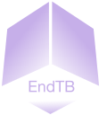
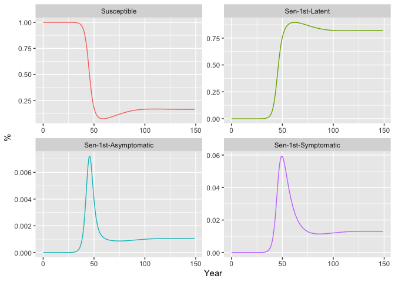

The goal of EndTB is to provide a convenient set of the established TB models for the simulation, estimation, and projection of Tuberculosis Epidemic.
Moreover
- the models are implemented in C++ which provides fast simulations.
- the models are called within the TMB framework, allowing advanced and fast parameter estimation with emprical Bayes approach.
Installation
You can install the development version of EndTB like so:
remotes::install_github('kklot/EndTB')Documents of the package and functions can be view as normal R’s documentation or online at EndTB.
Example
This is a basic example which shows you how to start a model:
where the default parameters σ was replaced with 2.
Steady-state of the model without treatments and no population growth for that set of parameters can be ploted with.
TB$plot()
List of states to be plotted can be supplied into the arguments of the plot function above.
Further details can be read in References in the top navigation. For example, the documentation of plot.
Check out model’s parameters and states for Moldova model.
EndTB:::states_moldova
#> S LS1 AS1
#> "Susceptible" "Sen-1st-Latent" "Sen-1st-Asymptomatic"
#> IS1 DS1 ES1
#> "Sen-1st-Symptomatic" "Sen-1st-Presented" "Sen-1st-Seekcare"
#> FS1 LS2 AS2
#> "Sen-1st-Treat" "Sen-2nd-Latent" "Sen-2nd-Asymptomatic"
#> IS2 DS2 ES2
#> "Sen-2nd-Symptomatic" "Sen-2nd-Presented" "Sen-2nd-Seekcare"
#> FS2 RS0 RS1
#> "Sen-2nd-Treat" "Sen-2nd-Recover-Stable" "Sen-2nd-Relapse-Low"
#> RS2 LR1 AR1
#> "Sen-2nd-Relapse-High" "Res-1st-Latent" "Res-1st-Asymptomatic"
#> IR1 DR1 ER1
#> "Res-1st-Symptomatic" "Res-1st-Presented" "Res-1st-Seekcare"
#> FR1 LR2 AR2
#> "Res-1st-Treat" "Res-2nd-Latent" "Res-2nd-Asymptomatic"
#> IR2 DR2 ER2
#> "Res-2nd-Symptomatic" "Res-2nd-Presented" "Res-2nd-Seekcare"
#> FR2 RR0 RR1
#> "Res-2nd-Treat" "Res-2nd-Recover-Stable" "Res-2nd-Relapse-Low"
#> RR2
#> "Res-2nd-Relapse-High"
EndTB:::pars_moldova
#> N beta_s beta_r kappa b mu
#> 2.38428e+07 4.40000e+00 1.20000e+01 1.00000e-01 1.00000e-02 1.50000e-02
#> mu_tb theta_s theta_r rho sigma delta
#> 1.50000e-01 1.40000e-01 1.40000e-01 1.00000e-03 7.90000e+00 7.50000e+00
#> gamma phi varepsilon omega tau_0 tau_1
#> 1.20000e+01 5.20000e+01 9.30000e-01 9.30000e-01 2.00000e+00 5.00000e-01
#> chi_s chi_r varrho r_0 r_1 r_2
#> 2.00000e-01 2.50000e-01 5.00000e-02 3.20000e-02 1.40000e-01 1.50000e-03
#> r_3 varsigma c_s0 c_r0 c_r1 m_n
#> 7.00000e-01 5.00000e-01 8.00000e-01 3.00000e-01 4.80000e-01 7.40000e-01
#> m_r xi
#> 4.70000e-01 8.00000e-01